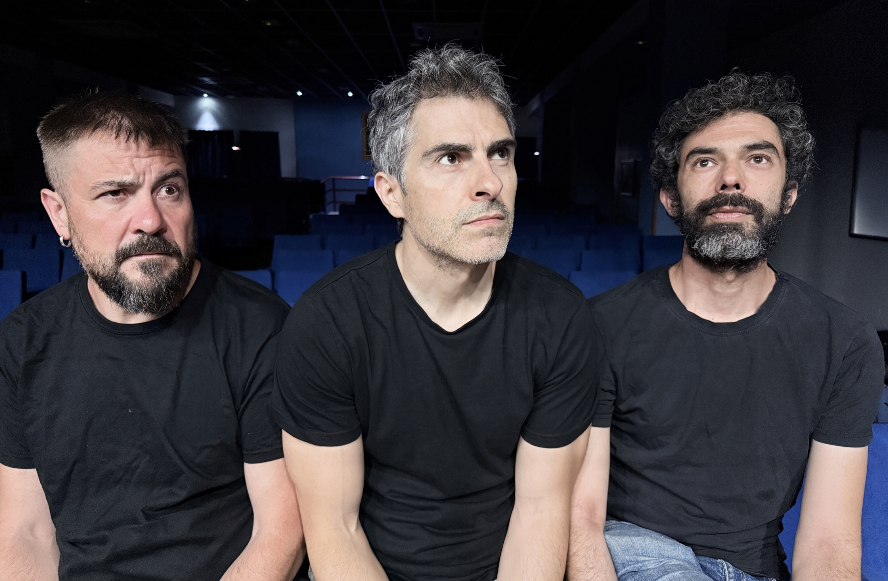
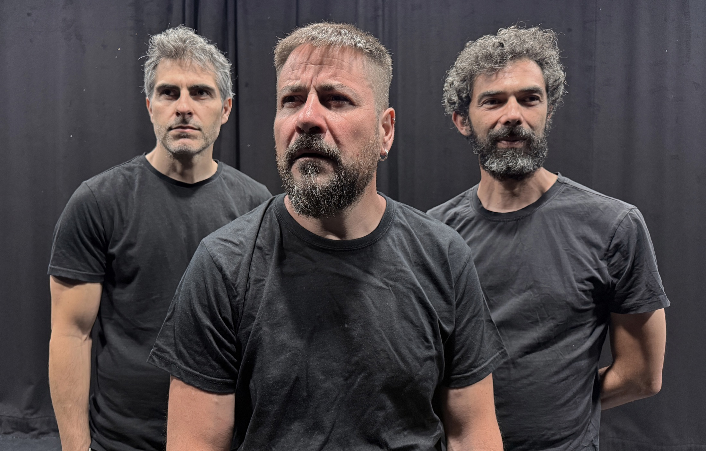
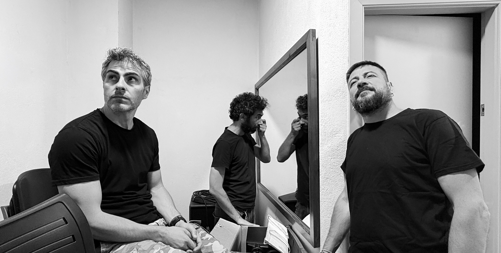
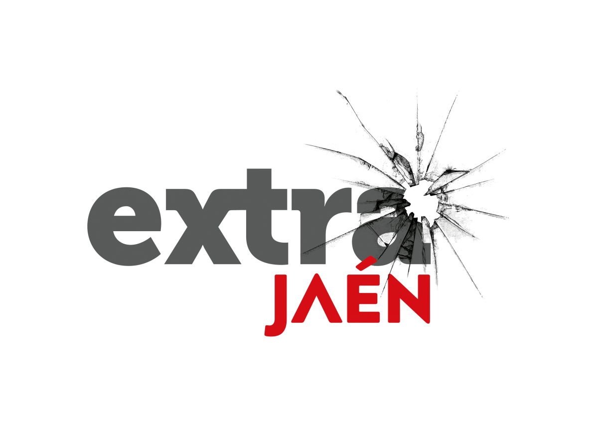
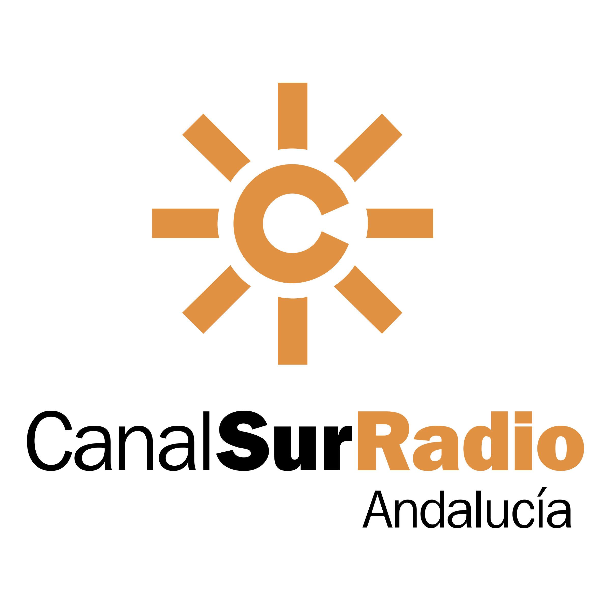
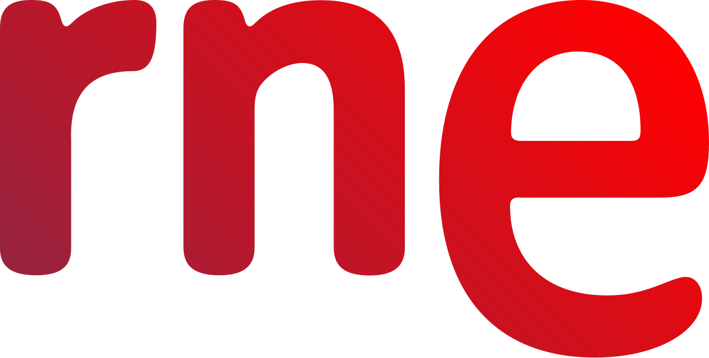
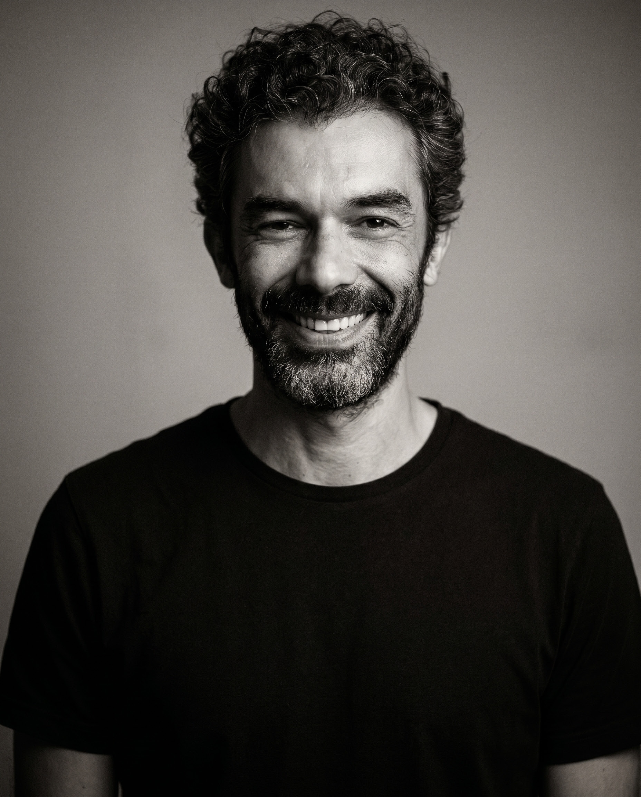
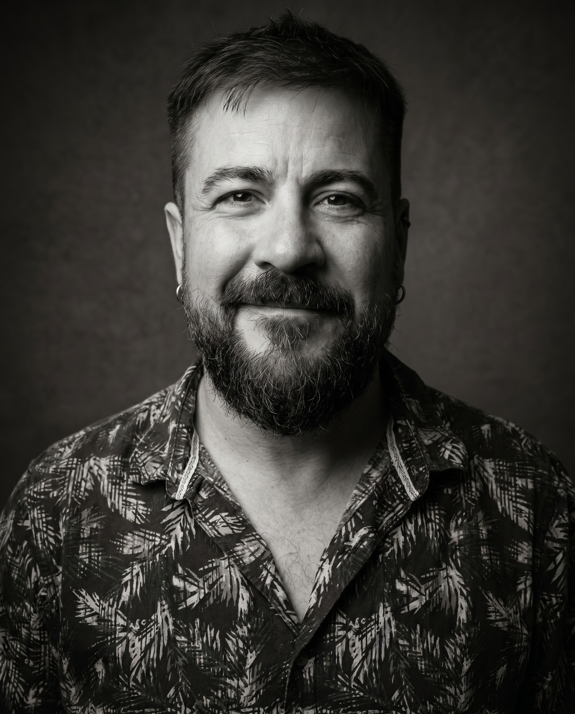
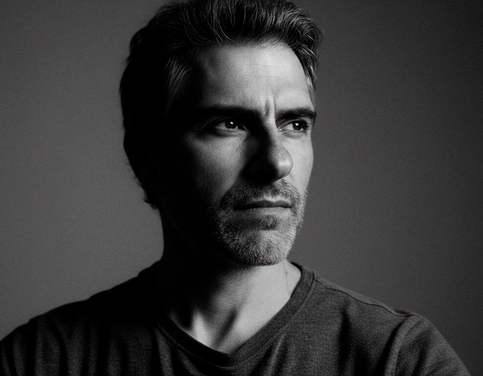

Comedia negra · drama · thriller escénico

Una obra en tiempo real sobre los límites del humor, el juicio público y esa zona incómoda donde todos creemos tener razón.
La obra
La risa también tiene sombra
Cancelado es una comedia negra con nervio dramático y tensión de thriller. Transcurre en tiempo real y coloca al público frente a una conversación que se estrecha hasta dejar poco sitio para la comodidad.
La pieza habla de humor, culpa, exposición pública y contradicciones privadas. No busca una respuesta limpia: prefiere abrir una herida reconocible y dejar que la sala respire dentro de ella.

Vídeos promocionales
Cancelado en vídeo
Piezas pensadas para enseñar el tono de la obra y apoyar la difusión en redes, programación cultural y comunicación de sala.
CANCELADO en 1 minuto
Promocional
Vídeo principal para presentar la obra y su atmósfera.
Short
Pieza vertical para redes y difusión rápida.
Prensa
Imágenes promocionales
Retratos y material gráfico de Cancelado disponibles para comunicación, programación y prensa. Próximamente incorporaremos una selección de fotografías de escena.

{kind=link}

{kind=link}

{kind=link}
En los medios
Hablan de Cancelado
Artículos, entrevistas y apariciones en prensa sobre el estreno de Cancelado, los límites del humor y la cultura de la cancelación.
Prensa
Leer artículo
Estreno de Cancelado y los límites del humor.

Prensa
Leer artículo
Juan Antonio Anguita estrena Cancelado en la UPM.

Radio
Próximamente
Entrevista sobre la obra y su estreno.

Radio
Entrevista en Radio Nacional de España Jaén.
Quiénes somos
El equipo de Cancelado
Tres miradas para una misma obra: interpretación, escritura, dirección y producción se cruzan en una pieza que busca tensión, humor y una conversación incómoda con el presente.

Rubén Román
Intérprete y producción · José Luis Buendía
Actor formado en Escénica Granada, RESAD y Guindalera Escena Abierta, con maestros como Miguel Narros, Cristina Rota, Juan Pastor, Vicente Fuentes o Pablo Messiez. Ha trabajado con compañías como Teatro La Paca, In Vitro Teatro, Escalinata Teatro, Ur Teatro, La Refinería Teatro y Conchinchina Teatro.
Entre sus trabajos figuran Coriolano, La vida es sueño, El bobo del colegio, El hijo del aire y En el Paraíso. También cuenta con experiencia audiovisual y ha dirigido montajes como La comedia sin título, de García Lorca.

Javier Martínez
Intérprete, producción y distribución · David Pichardo
Actor con 17 años de trayectoria en montajes de teatro y trabajos delante de la cámara. Ha pasado por comedia, drama, musical y propuestas de un solo intérprete en escena, encarnando distintos personajes.
En teatro destacan trabajos como Cosas y A muerte. En audiovisual ha participado en varios cortometrajes y en películas como Salpicados por el desastre. En Cancelado asume también la gestión de producción y el contacto de distribución.

Juan A. Anguita
Texto, dirección, diseño sonoro y producción
Guionista, director de cine, docente y creador escénico. Vinculado al audiovisual desde muy joven, ha desarrollado proyectos de ficción, publicidad, teatro y creación audiovisual, combinando una mirada narrativa cinematográfica con el interés por las nuevas herramientas de creación digital e inteligencia artificial.
Entre sus trabajos destacan los largometrajes 12 palabras y Semiprofesionales, disponibles en Filmin. En Cancelado firma texto y dirección, construyendo una comedia negra donde el humor se convierte en campo de batalla.
www.juanantonioanguita.esDossieres y contacto
Aquí tienes todo lo que necesitas saber sobre nuestra obra. Si aun así te falta información, ponte en contacto con nosotros.
Dossier breve
Una primera lectura clara para programadores, áreas de cultura y distribuidores.
Rider técnico
Necesidades de montaje, sala e indicaciones prácticas para equipos técnicos.
Dossier íntegro
Propuesta artística, venta, información de distribución y desglose técnico en un único archivo.
Javier Martínez
+34 647 62 76 69